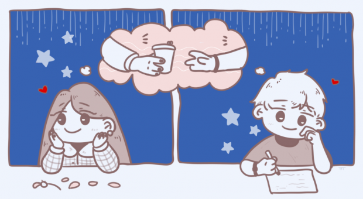

Quem nunca?
Quem nunca fez só a tela de login e deixou o resto pro Dev Driven do
futuro?
#OSistemaTáProntoSimSóOLoginQueTáBugado
O segredo
De 0 a monstrão em um projetão
#FitnessÉMinhaPaixão
#DesafioDos1000Bugs

Bug infernal
Depois de 5h e ter chorado só 3 vezes consegui resolver o bug
infernal! #Hacker
#DeviaTerChamadoOsTutoresMaisCedo
Gratidão
Mas pera... O primeiro programa usou que programa para ser feito? 🤔
#EmQualLinguagemFoiFeitaAPrimeiraLinguagem
Primeiro dia de aula
Hoje foi o primeiro dia de aula da Driven e foi sensacional!
#DevJunin

#Emocionado
A crush me reparou
A crush finalmente me reparou 😍 #Emocionado